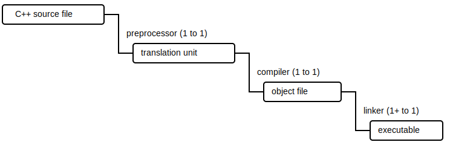

Integer types with standardized bit lengths are defined in cstdlib of the standard C++ library.
| signed | unsigned | description |
|---|---|---|
intmax_t |
uintmax_t |
widest possible bit length |
int8_t |
uint8_t |
exactly 8 bits |
int16_t |
uint16_t |
exactly 16 bits |
int32_t |
uint32_t |
exactly 32 bits |
int64_t |
uint64_t |
exactly 64 bits |
int_least8_t |
uint_least8_t |
8 bits or greater |
int_least16_t |
uint_least16_t |
16 bits or greater |
int_least32_t |
uint_least32_t |
32 bits or greater |
int_least64_t |
uint_least64_t |
64 bits or greater |
int_fast8_t |
uint_fast8_t |
8 bits or greater |
int_fast16_t |
uint_fast16_t |
16 bits or greater |
int_fast32_t |
uint_fast32_t |
32 bits or greater |
int_fast64_t |
uint_fast64_t |
64 bits or greater |
intptr_t |
uintptr_t |
wide enough to hold a void * |
size_t |
wide enough to hold the maximum number of bytes of something in memory |
The minimum and maximum extents of each type are defined in {TYPE}_MIN and {TYPE}_MAX, where {TYPE} doesn't include the _t suffix. For example the maximum value an uint64_t can be is UINT64_MAX.
⚠️NOTE️️️⚠️
Not all types guaranteed to be present (e.g. 64-bit types may be missing if platform can't support it). Unsigned types don't have a minimum extent defined because a minimum of any unsigned integer type is always 0 (e.g. uint64_t can't go any lower than 0).
To expand any integer literal to a ...
intmax_t, use the macro INTMAX_C(...).uintmax_t, use the macro UINTMAX_C(...).int{N}_t, use the macro INT{N}_C(...) (where {N} is the bit length).uint{N}_t, use the macro UINT{N}_C(...) (where {N} is the bit length).⚠️NOTE️️️⚠️
What's the point of the above? You don't know what internal integer type each standardized type maps to. For example, uint64_t may map to unsigned long long, which means when you want to assign a literal to a variable of that type you need to add a LLU suffix...
uint64_t test = 9999999999999999999LLU
The macros above make it so that you don't need to know the underlying mapping...
uint64_t test = UINT64_C(9999999999999999999)
By default, literals are represented using base10. Literals may be presented in different bases via the prefix.
| base | literal prefix | example |
|---|---|---|
| 2 (binary) | 0b | 0b1111 |
| 8 (octal) | 0 | 015 |
| 16 (hex) | 0x | 0xF |
| type | description | literal suffix | example |
|---|---|---|---|
float |
single precision | f |
123.0f |
double |
double precision | 123.0 |
|
long double |
extended precision | L |
123.0L |
Floating point characteristics are found in cfloat of the standard C++ library.
TODO: fill me in, it doesn't sound like any of the types are standardized to anything
Core C++ strings are represented as an array of characters, where that array ends with a null character to signify its end. This is in contrast to other major platforms that typically structure strings a size integer along with the array (no null terminator).
Individual characters all map to integer types, where literals are defined by wrapping the character in single quotes. Even though they're integers, the signed-ness of each of the types below isn't guaranteed.
| type | literal prefix | example | description |
|---|---|---|---|
char |
'T' |
1-byte wide character (e.g. UTF-8 or ASCII) | |
char16_t |
L |
L'T' |
2-byte wide character (e.g. UTF-16) |
char32_t |
u |
u'T' |
4-byte wide character (e.g. UTF-32) |
wchar_t |
U |
U'T' |
wide enough to hold the largest character type |
⚠️NOTE️️️⚠️
The char type can specifically be made to signed / unsigned by prefixing it as such: signed char / unsigned char.
Strings literals are wrapped in double quotes instead of single quotes, where they get transformed into an array terminated by a null character.
| type | literal prefix | example | description |
|---|---|---|---|
char * |
"hello" |
unknown encoding (platform specific?) | |
wchar_t * |
L |
L"hello" |
unknown encoding (platform specific?) |
char16_t * |
u |
u"hello" |
encoded as UTF-16 |
char32_t * |
U |
U"hello" |
encoded as UTF-32 |
char8_t * |
u8 |
u8"hello" |
encoded as UTF-8 |
Typically escaping rules apply to string literals. Unescaped string literals are allowed by adding an R at the end of the literal prefix, which make it so that the ...
These delimiter characters are characters that aren't encountered in the contents of the string itself. For example, in u8R"|hello|", the delimiter is | and isn't included in the resulting UTF-8 string.
processor - A tool that takes in a C++ source file and performs basic manipulation on it to produce what's called a translation unit.

compiler - A tool that takes in a translation unit to produce an intermediary format called an object file.
linker - A tool that takes multiple object files to produce an executable. Linkers are are also responsible for finding libraries used by the program and integrating them into the executable.
cstdin - A standard C++ library that has integer types with bit length guarantees.
| signed | unsigned | description |
|---|---|---|
| int8_t | uint8_t | exactly 8 bits |
| int16_t | uint16_t | exactly 16 bits |
| int32_t | uint32_t | exactly 32 bits |
| int64_t | uint64_t | exactly 64 bits |
| int_least8_t | uint_least8_t | 8 bits or greater |
| int_least16_t | uint_least16_t | 16 bits or greater |
| int_least32_t | uint_least32_t | 32 bits or greater |
| int_least64_t | uint_least64_t | 64 bits or greater |
| intptr_t | uintptr_t | wide enough to hold a void * |
In addition, the library holds literals